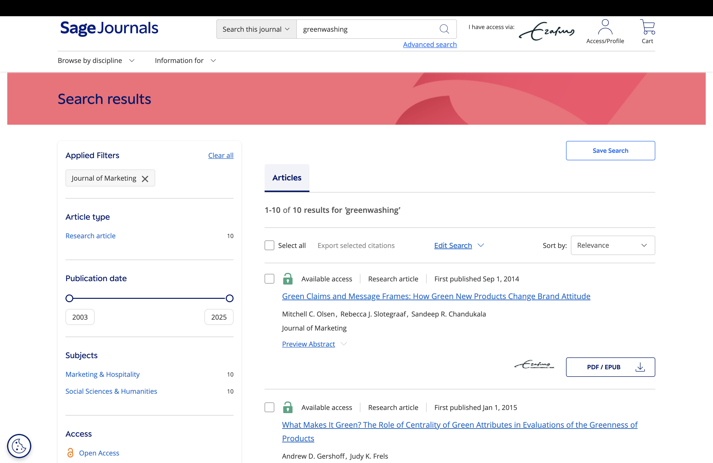
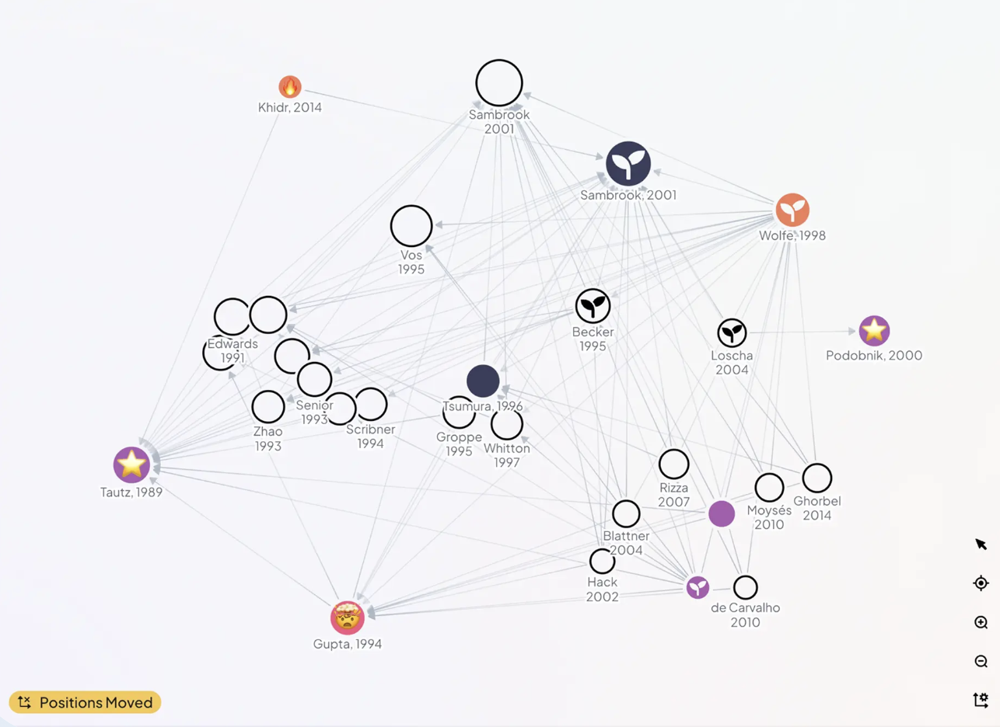

Literature Review
Day 2 - Block 3
(Literature) search is hard
… especially if there are paywalls
It might still work though (kind of)
| Journal | Paper | Method | Key finding |
|---|---|---|---|
| Journal of Consumer Research | Newman, Gorlin, Dhar (2014) | Experiments | Green initiatives backfire when consumers infer self-serving motives; perceived hypocrisy drives negative evaluations. |
| Journal of Marketing | Luchs et al. (2010) | Experiments | “Sustainability liability”: green products are seen as less effective in strength-related categories → indirect driver of skepticism. |
| Journal of Consumer Psychology | Forehand & Grier (2003) | Experiments | Firm motive attribution → skepticism; ulterior motives reduce persuasion (core mechanism behind greenwashing perceptions). |

Some tips
Prompt for notification about paywalls
Otherwise fails silently and reports based on abstract
Provide list of journals
Quality ranking of research is weak so far (GPT likes researchgate, because its accessible!)
Activate web-search
SOA models do this automatically; However, monitor whether it actually searches the web. Reduces hallucinations!
False results
We are aware of false positives (“hallucinations”)
(i.e. papers that do not exist but are “found”)
. . .
For literature search, false negative are a huge problem too!
(i.e. papers that do exist but are not “found”)
Impose more structure on search

Build a literature agent: Tools
arXiv MCP:
- Let AI search and download arXiv papers
Zotero MCP:
- Automatic RAG on papers!
- Citation via bibtex-key
⚠️ Copyright
- Closed-source papers to LLM
- Trust AI citations blindly
- Log Paywall blocks
- Use private AI models
Exercise Brief
E09 - Evidence paragraph plus claim ledger
This exercise makes literature review auditable. You will check journal policy, build a small evidence set, and produce a paragraph where every claim can be traced to a source snippet and confidence score.
- Deliverable: One paragraph plus claim-evidence ledger (minimum two claims with source/snippet/confidence/gap), including one policy note and one unresolved gap.
- Timebox: 20/30/10
- Submit: E09